| 伝えるための心理統計 |
| 伝えるための心理統計 |
Rosenthal (1994) による分類：
群間差（ 族）
族）
変数観の関係（ 族）
族）
族の効果量母平均 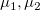、2群に共通の母分散  として、
として、
| 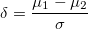 | (4.5) |
を母集団効果量とする。 これを推定するために、以下の方法が提案されている。 （分母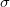をどのようにするか。）
 |
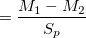 | (4.6) | ||
 |
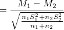 | (4.7) |
ただし、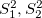は各群の標本分散（不偏でない）1。

| 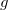 |  |
(4.8) | ||
|
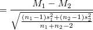 | (4.9) |
ただし、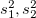は各群の不偏分散2。
とには
| 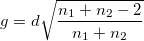 | (4.10) |
という関係がある。
また、と検定統計量 には
には
| 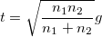 | (4.11) |
が成り立つ。
にもまだ正方向のバイアスがあり、これを補正するために
| 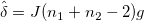 | (4.12) | ||
| 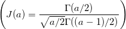 | (4.13) | ||
| 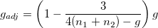 | (4.14) | ||
| 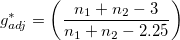 | (4.15) |
などが提案されている3。
介入によって分散が変化することを考慮し（等分散性が満たされない）、統制群の標準偏差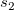を用いて
| 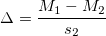 | (4.16) |
とする4。
分母を計算する際に片方のデータしか用いないため、
やに比べて標本誤差が大きい
から直接計算できず、メタ分析に使いにくい
という欠点がある。
対応のない場合と同様にやを算出する
— 対応の有無に関係なく同尺度上で値を比較できるが、2群の相関関係は考慮されない
差得点を用いて効果量を算出する
— 2群の相関関係は考慮され、検定統計量との関係からも整合的であるが、対応の有無で値を直接比較できない
差得点を利用する場合、
| 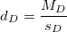 | (4.17) |
とする（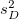は差得点の不偏分散）。
この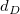は、母集団効果量
| 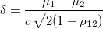 | (4.18) |
の推定量になる5。
族の効果量 点双列相関係数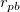は、連続変数を2群に分け、各群の比率を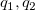としデータ全体の（不偏でない）標準偏差を とすると、
とすると、
| 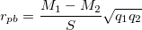 | (4.19) |
が成り立つ。
| 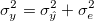 | (4.20) |
として、
| 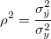 | (4.21) |
を決定係数（分散説明率）とする。
回帰分析と同様、
| 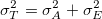 | (4.22) |
として、
| 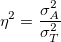 | (4.23) |
を母集団効果量とする。この推定量として、
| 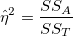 | (4.24) | ||
| 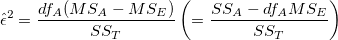 | (4.25) | ||
| 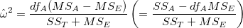 | (4.26) |
が提案されている6。
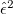は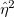と比較して分子の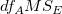分だけ小さく、 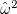はと比較して分母の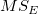分だけ小さい値になる。
| 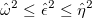 | (4.27) |
だが、との差はかなり小さい。
は、母分散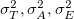それぞれを平方和ではなく、より適切な推定量で推定して置き換える7。
メモ |
平均平方の期待値については、Kirk (2013) で再確認 |
| 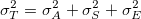 | (4.28) |
のように分散成分が3つ以上に分かれる場合、関心のある分散を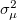と表し、
| 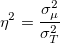 | (4.29) | ||
| 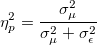 | (4.30) |
の2種類の効果量を考えることができる（決定係数と偏決定係数）。
この場合の および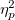についても、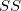を用いてや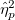を推定量とすることもできるし、分散成分の推定量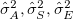からバイアスを補正した推定量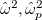を用いることもできる。
および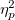についても、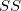を用いてや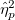を推定量とすることもできるし、分散成分の推定量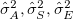からバイアスを補正した推定量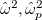を用いることもできる。
決定係数、偏決定係数の推定量としてを用いる限り、1要因の場合と値が変わることはないが8、母分散の推定量自体は変化するので、の値は1要因の場合と変化する。
メモ |
本書では、各要因の分散説明率を決定係数としているが、回帰分析との整合性の観点からすれば、モデルで説明できる部分全体を分子に取ったものを決定係数と言い、各要因の追加による決定係数の増加は部分決定係数と呼ぶはず。 南風原 (2014) の指摘するように部分決定係数は検定力を直接規定せず、決定係数と偏決定係数は検定力を直接規定するので、この区別は曖昧にしない方がよい。 |
メモ |
|
被験者内デザインでは、被験者間デザインよりもが必然的に大きくなる9ので、偏決定係数の値を比較できない。
データを変動させる要因を
操作された要因の分散
個人差の分散（操作されていない要因に由来する分散の全体）
に大別し、
| 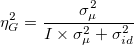 | (4.31) |
を一般化効果量とする。
：関心のある要因の分散
 ：関心のある要因が操作された要因なら1、そうでなければ（個人差の成分さえ含んでいれば）0
：関心のある要因が操作された要因なら1、そうでなければ（個人差の成分さえ含んでいれば）0
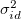 ：操作されていない要因の分散の総和
1要因分散分析について、対応ありとなしの場合を考えてみる。 要因Aが操作された要因で、かつ関心のある要因である場合、
| 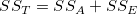 | (4.32) |
であるから、
| (4.33) | ||||
|
(4.34) |
となる。
| (4.35) |
であるから、
| (4.36) | ||||
|
(4.37) |
となる。
対応ありとなしの場合で、データ自体が同じであればの値自体は変わらない10
平均だけ異なる2つの分布について、重なり具合を効果の大きさとして評価したもの。
分布が重ならない軸の範囲の面積割合

分布の高さが交わる軸の値より大きい（小さい）範囲の面積割合
高群の中央値よりも小さな範囲の低群の面積割合
母集団において2群の値に同順はないものとすると、第2群より第1群の個体が大きな値を取る確率（優越確率）
| (4.38) |
を定義できる11。
実際のデータでは同順位が発生するので、そのペアについてはに半数ずつ割り当てるとして、
| (4.39) |
として算出する。これは、Mann-Whitneyの検定統計量に等しい。
母集団においても同順を認めるとすると、
| (4.40) |
を定義でき、この推定量をCliffのと呼ぶ。
2群に対応がある場合、ペアごとに第1群の2群での大小を比較して、その数をとすれば、
| (4.41) |
とすればよい。
標準化しない、もとの単位のままの効果量を単純効果量12とよび、APAマニュアルでも認められている。
Footnotes
として表したのは式(4.5)の のことであり、式(4.8)のに相当する量がと表されていた。一方、式(4.6)をCohenの提唱した推定量として“Cohenの"と定義する文献も多く、混乱を招いている。ここでは、McGrath & Meyer (2006) によって整理・推奨された記法に則っている。の不偏推定量になる。自体は不偏推定量でないが、よりもバイアスは小さい。
のことであり、式(4.8)のに相当する量がと表されていた。一方、式(4.6)をCohenの提唱した推定量として“Cohenの"と定義する文献も多く、混乱を招いている。ここでは、McGrath & Meyer (2006) によって整理・推奨された記法に則っている。の不偏推定量になる。自体は不偏推定量でないが、よりもバイアスは小さい。| 伝えるための心理統計 |